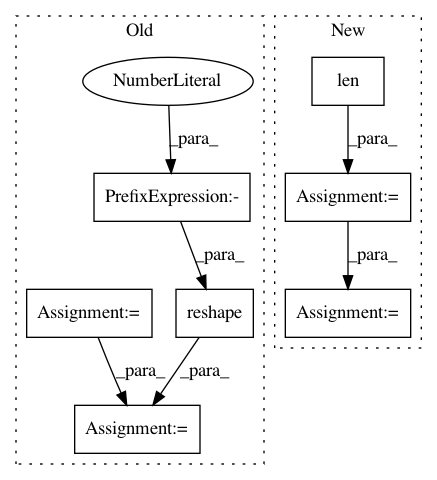

090944e816fd3ff8e861fba4452851e0a901491d,scripts/language_model/large_word_language_model.py,,train,#,193
Before Change
with autograd.record():
for j, (X, y, m, s, h) in enumerate(zip(data, target, mask, sample, hiddens)):
output, h, new_target = model(X, y, h, s)
output = output.reshape((-3, -1))
new_target = new_target.reshape((-1,))
l = loss(output, new_target) * m.reshape((-1,))
Ls.append(l/args.batch_size)
hiddens[j] = h
autograd.backward(Ls)
After Change
encoder_params = model.encoder.collect_params().values()
embedding_params = list(model.embedding.collect_params().values())
parallel_model = ParallelBigRNN(model, loss)
parallel = Parallel(len(context), parallel_model)
for epoch in range(from_epoch, args.epochs):
sys.stdout.flush()
total_L = 0.0
start_epoch_time = time.time()
start_log_interval_time = time.time()
hiddens = [model.begin_state(batch_size=args.batch_size,
func=mx.nd.zeros, ctx=ctx) for ctx in context]
nbatch = 0
has_next = True
train_data_iter = iter(train_data)
data, target, mask, sample = next(train_data_iter)
while has_next:
nbatch += 1
hiddens = detach(hiddens)
Ls = []
for _, batch in enumerate(zip(data, target, mask, sample, hiddens)):
parallel.put(batch)
for _ in range(len(data)):
hidden, ls = parallel.get()
// hidden states are ordered by context id
index = context.index(hidden[0].context)
hiddens[index] = hidden
Ls.append(ls)
In pattern: SUPERPATTERN
Frequency: 3
Non-data size: 7
Instances
Project Name: dmlc/gluon-nlp
Commit Name: 090944e816fd3ff8e861fba4452851e0a901491d
Time: 2019-01-28
Author: linhaibin.eric@gmail.com
File Name: scripts/language_model/large_word_language_model.py
Class Name:
Method Name: train
Project Name: bethgelab/foolbox
Commit Name: b939c910d036d8197ac7c63e5f188bc4c4fc4803
Time: 2019-07-20
Author: rzrolandzimmermann@gmail.com
File Name: foolbox/batching.py
Class Name:
Method Name: run_parallel
Project Name: nipy/dipy
Commit Name: e1514f7ca0dbf8f055db06deb9bc7d5ac4ae3a3b
Time: 2015-03-24
Author: rohan.prinja@gmail.com
File Name: dipy/tracking/utils.py
Class Name:
Method Name: seeds_from_mask